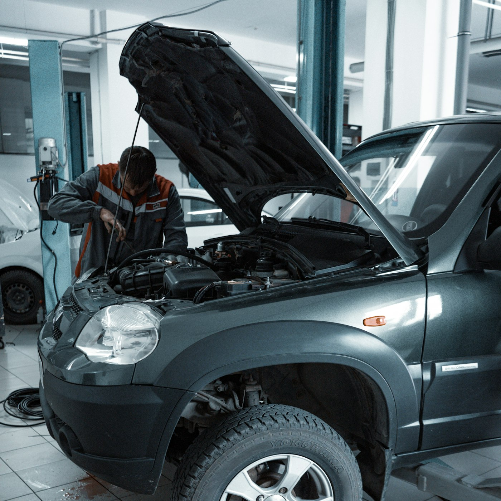
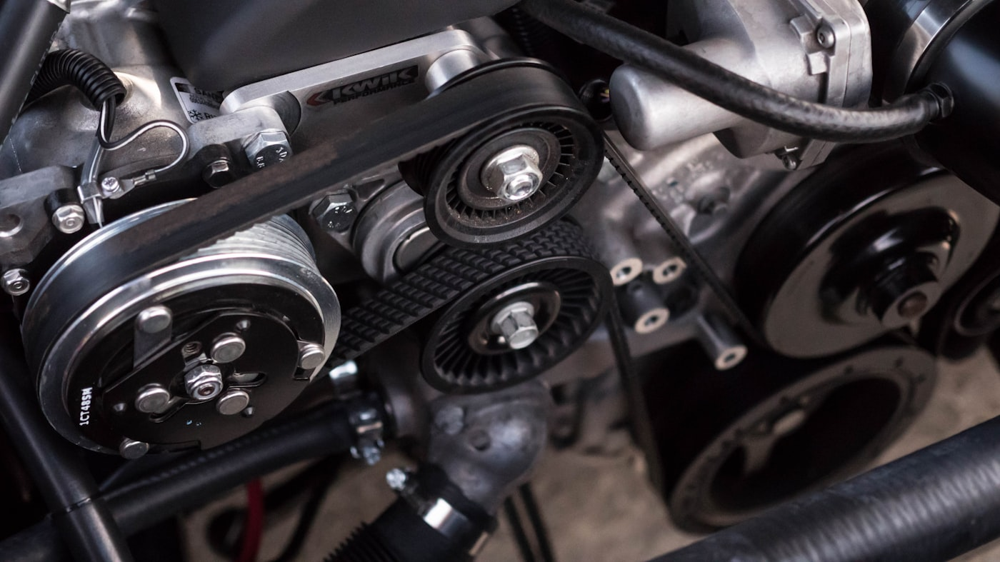
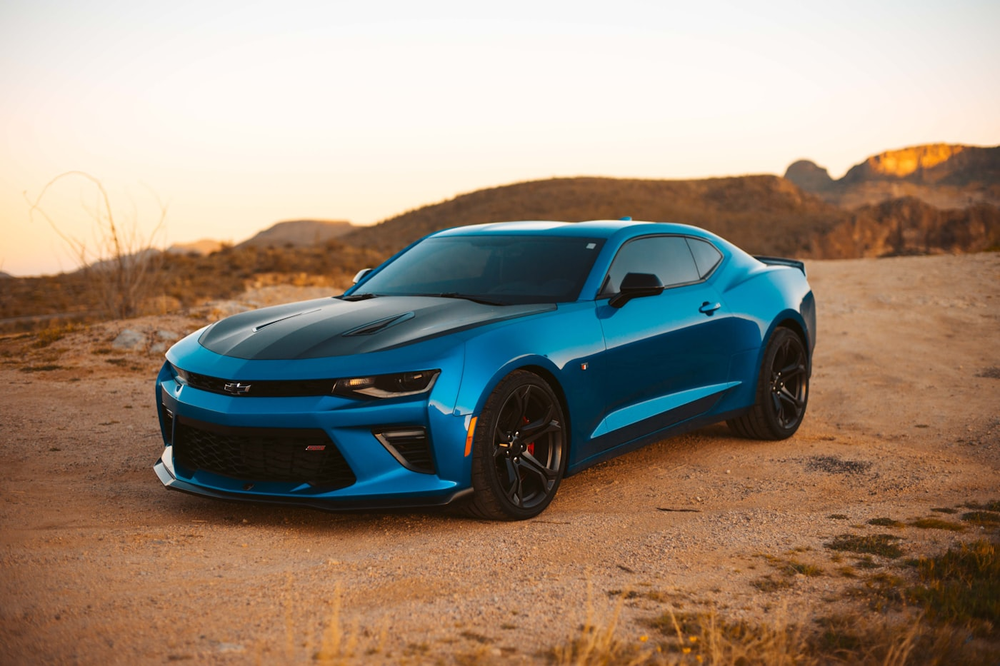
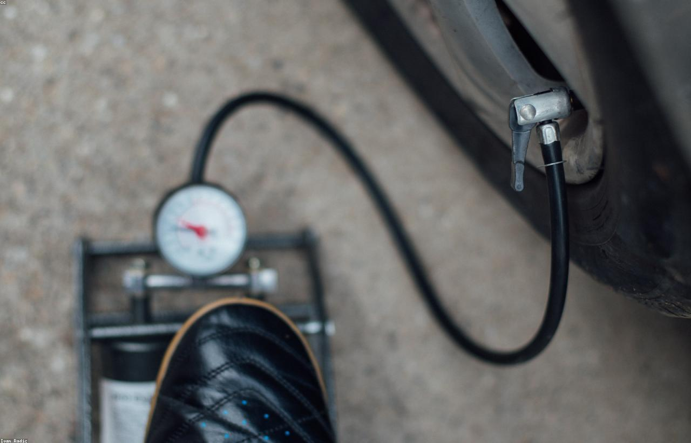
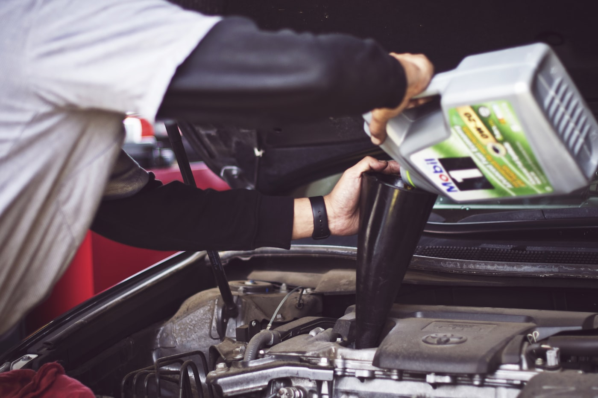
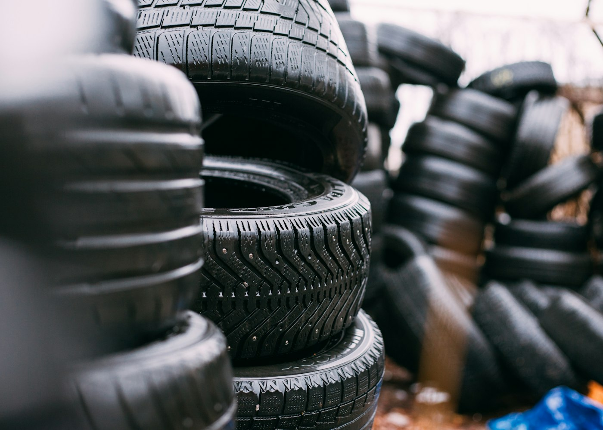
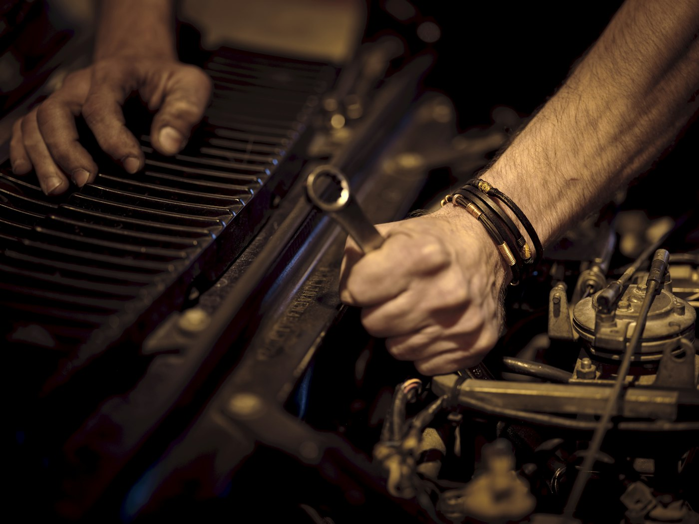

Stanowisko serwisoweDiagnostyka pod maską

Naprawa silnikaEcoBoost 1.0

Po serwisieGotowy do odbioru
Diagnostyka komputerowaFord IDS / FDRS

Serwis kółKontrola ciśnienia

Ford — klasa premiumOdbiór po naprawie

Elektronika wnętrzaKalibracja systemów

Wymiana olejuPrzegląd okresowy
Jazda próbnaTest po naprawie

Przechowalnia oponSezonowa wymiana

Precyzyjna naprawaRęce fachowca
Ford MustangSerwis premium